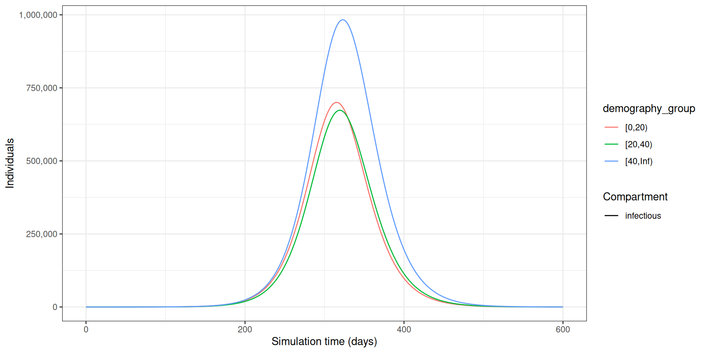
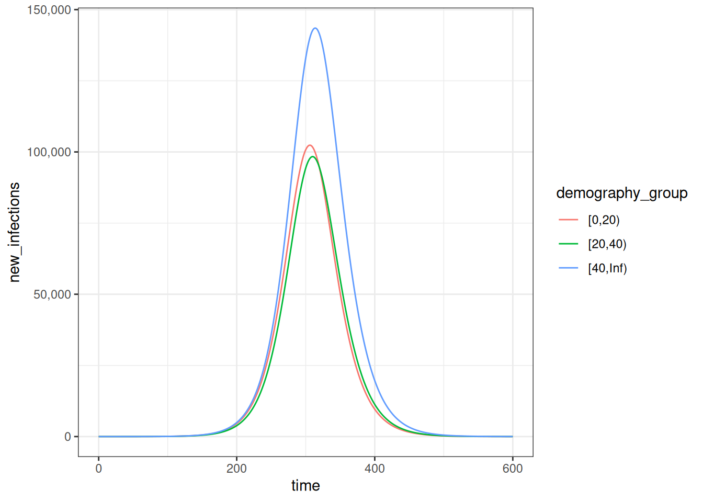
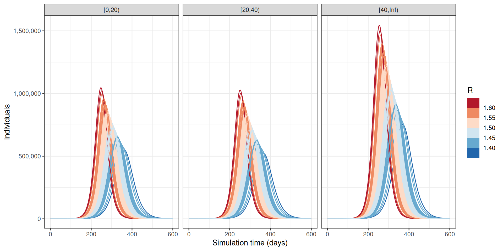

library(epidemics)
library(contactsurveys)
library(socialmixr)
library(wpp2024)
library(tidyverse)Simular a transmissão
NotaPerguntas
- Como simular a propagação de uma doença usando um modelo matemático?
- Quais entradas são necessárias para a simulação de um modelo?
- Como levar em conta a incerteza?
DicaObjetivos
- Carregar uma estrutura de modelo existente a partir do pacote R
{epidemics} - Carregar uma matriz de contato social existente com o
{socialmixr} - Gerar uma simulação de modelo de propagação de doença com o
{epidemics} - Gerar múltiplas simulações de modelo e visualizar a incerteza
ImportantePré-requisitos
- Concluir o tutorial sobre matrizes de contato.
Os participantes devem se familiarizar com os seguintes conceitos antes de trabalhar neste tutorial:
Modelagem matemática: Introduction to infectious disease models, variáveis de estado, parâmetros do modelo, condições iniciais, equações diferenciais.
Teoria epidêmica: Transmission, Reproduction number.
Pacotes R instalados: {epidemics}, {contactsurveys}, {socialmixr}, {wpp2024}, {scales}, {tidyverse}.
NotaDetalhes
Instale estes pacotes se ainda não estiverem instalados (você pode configurar o espelho brasileiro do CRAN com options(repos = c(CRAN = "https://cran-r.c3sl.ufpr.br/"))):
if (!base::require("pak")) install.packages("pak")
pak::pak(c("epiverse-trace/epidemics", "PPgp/wpp2024", "contactsurveys", "socialmixr", "scales", "tidyverse"))Se receber qualquer mensagem de erro, consulte a página principal de configuração.
Introdução
Modelos matemáticos são ferramentas úteis para gerar trajetórias de propagação de doenças. Neste tutorial, usaremos o pacote R {epidemics} para gerar trajetórias de doença para uma cepa de influenza com potencial pandêmico. Ao final deste tutorial, você será capaz de gerar a trajetória abaixo mostrando o número de indivíduos infecciosos em diferentes faixas etárias ao longo do tempo.
NotaNo Brasil: onde esses dados existem
O exemplo deste episódio usa uma cepa de influenza com potencial pandêmico. No Brasil, a vigilância de vírus respiratórios combina a rede sentinela de Síndrome Gripal (SG) com a notificação de SRAG hospitalizado no SIVEP-Gripe, cuja base é publicada aberta (Portal de Dados Abertos do SUS — SIVEP-Gripe).
Neste tutorial, vamos aprender a usar o pacote {epidemics} para simular trajetórias de doenças e acessar dados de contato social com o {socialmixr}. Usaremos {dplyr}, {ggplot2} e o pipe %>% para conectar algumas de suas funções, portanto vamos carregar também o pacote {tidyverse}:
ImportantePara o instrutor
Use os slides para apresentar os tópicos de:
- Modelagem de cenários e
- Matriz de contato.
Em seguida, inicie o livecoding.
Simular a propagação da doença
Para simular trajetórias de doenças infecciosas, devemos primeiro selecionar um modelo matemático para usar. Existe uma biblioteca de modelos para escolher no {epidemics}. Eles têm o prefixo model_* e o sufixo com o nome da infecção (por exemplo, model_ebola para Ebola) ou outro identificador (por exemplo, model_default).
Neste tutorial, usaremos o modelo padrão do {epidemics}, chamado model_default(), projetado para ser um modelo estruturado por idade que categoriza os indivíduos com base em seu estado de infecção. Para cada faixa etária \(i\), os indivíduos são categorizados como suscetíveis \(S\), infectados mas ainda não infecciosos \(E\), infecciosos \(I\) ou recuperados \(R\). Em seguida, precisamos definir o processo pelo qual os indivíduos fluem de um compartimento para outro. Isso pode ser feito definindo um conjunto de equações diferenciais que especificam como o número de indivíduos em cada compartimento muda ao longo do tempo.
O esquema abaixo mostra os processos que descrevem o fluxo de indivíduos entre os estados da doença \(S\), \(E\), \(I\) e \(R\) e os principais parâmetros de cada processo.
flowchart LR
accTitle: Modelo compartimental SEIR
accDescr: Quatro compartimentos: S (Suscetível), E (Exposto), I (Infeccioso), R (Recuperado). Transições: S para E por infecção à taxa de transmissão beta; E para I por início da infecciosidade à taxa alpha; I para R por recuperação à taxa gamma.
S -->|"infecção<br>(taxa de transmissão β)"| E
E -->|"início da infecciosidade<br>(taxa de infecciosidade α)"| I
I -->|"recuperação<br>(taxa de recuperação γ)"| R
NotaParâmetros do modelo: taxas
Em modelos populacionais definidos por equações diferenciais, os parâmetros do modelo são frequentemente (mas nem sempre) especificados como taxas. A taxa na qual um evento ocorre é o inverso do tempo médio até esse evento. Por exemplo, no modelo SEIR, a taxa de recuperação \(\gamma\) é o inverso do período infeccioso médio.
Os valores dessas taxas podem ser determinados a partir da história natural da doença. Por exemplo, se as pessoas são, em média, infecciosas por 8 dias, então no modelo, 1/8 das pessoas atualmente infecciosas se recuperaria a cada dia (ou seja, a taxa de recuperação, \(\gamma=1/8=0.125\)).
Para cada estado da doença (\(S\), \(E\), \(I\) e \(R\)) e faixa etária (\(i\)), temos uma equação diferencial que descreve a taxa de variação em relação ao tempo.
\[ \begin{aligned} \frac{dS_i}{dt} & = - \beta S_i \sum_j C_{i,j} I_j/N_j \\ \frac{dE_i}{dt} &= \beta S_i\sum_j C_{i,j} I_j/N_j - \alpha E_i \\ \frac{dI_i}{dt} &= \alpha E_i - \gamma I_i \\ \frac{dR_i}{dt} &=\gamma I_i \\ \end{aligned} \]
Os indivíduos na faixa etária (\(i\)) passam do estado suscetível (\(S_i\)) para o estado exposto (\(E_i\)) por meio de contatos específicos por idade com indivíduos infecciosos de todos os grupos \(\beta S_i \sum_j C_{i,j} I_j/N_j\). A matriz de contato \(C\) permite considerar a heterogeneidade nos contatos entre as faixas etárias. Em seguida, eles passam para o estado infeccioso a uma taxa \(\alpha\) e se recuperam a uma taxa \(\gamma\). Observe que este modelo assume ausência de perda de imunidade (o que significa que não há fluxos de saída do estado recuperado), o que pode não ser aplicável a todas as doenças. A imunidade cai mais rapidamente em certas infecções, permitindo a reinfecção.
Os parâmetros do modelo são:
- taxa de transmissão \(\beta\) (derivada do número básico de reprodução \(R_0\) e da taxa de recuperação \(\gamma\)),
- matriz de contato \(C\) contendo a frequência de contatos entre as faixas etárias (uma matriz quadrada \(i \times j\)),
- taxa de infecciosidade \(\alpha\) (período pré-infeccioso, ou período de latência =\(1/\alpha\)) e
- taxa de recuperação \(\gamma\) (período infeccioso = \(1/\gamma\)).
NotaExposto, infectado, infeccioso
Às vezes ocorrem confusões ao se referir aos termos “exposto”, “infectado” e “infeccioso” na modelagem matemática. A infecção ocorre após a pessoa ter sido exposta, mas, em termos de modelagem, indivíduos “expostos” são tratados como já infectados.
Usaremos as seguintes definições para nossas variáveis de estado:
- \(E\) = Exposto: infectado mas ainda não infeccioso,
- \(I\) = Infeccioso: infectado e infeccioso.
Para gerar trajetórias usando nosso modelo, devemos preparar as seguintes entradas:
- Matriz de contato
- Condições iniciais
- Estrutura populacional
- Parâmetros do modelo
1. Matriz de contato
Uma matriz de contato representa o número médio de contatos entre indivíduos de diferentes faixas etárias. Ela é um componente crucial em modelos estruturados por idade, pois captura como diferentes faixas etárias interagem e potencialmente transmitem infecções. Usaremos o pacote R {socialmixr} para carregar uma matriz de contato estimada a partir dos dados do inquérito POLYMOD (Mossong et al. 2008).
DicaDesafio
Carregar dados de contato e população
Usando o pacote R socialmixr, obtenha a matriz de contato para o Reino Unido para as faixas etárias de:
- idade entre 0 e 20 anos,
- idade entre 20 e 40 anos,
- 40 anos ou mais.
Use o inquérito POLYMOD disponível em https://doi.org/10.5281/zenodo.3874557
NotaDica
- Concluir o tutorial sobre matrizes de contato.
NotaSolução
# Baixar e carregar os dados do inquérito de contato
survey_files <- contactsurveys::download_survey(
survey = "https://doi.org/10.5281/zenodo.3874557",
verbose = FALSE
)
survey_load <- socialmixr::load_survey(files = survey_files)
data(popAge1dt, package = "wpp2024")
uk_pop <- popAge1dt %>%
dplyr::filter(name == "United Kingdom", year == 2020) %>%
dplyr::select(lower.age.limit = age, population = pop) %>%
dplyr::mutate(population = population * 1000)
# Gerar a matriz de contato
contacts_byage <- socialmixr::contact_matrix(
survey = survey_load,
countries = "United Kingdom",
age_limits = c(0, 20, 40),
symmetric = TRUE,
survey_pop = uk_pop
)
# Preparar a matriz de contato
contacts_byage_matrix <- contacts_byage$matrix
# Imprimir
contacts_byage_matrix contact.age.group
age.group [0,20) [20,40) [40,Inf)
[0,20) 7.883663 3.114224 3.230298
[20,40) 2.799168 4.854839 4.873347
[40,Inf) 1.507146 2.529653 5.005571Lembre-se de que a matriz satisfaz a condição symmetric = TRUE no nível do número total de contatos.
O número total de contatos entre os grupos \(i\) e \(j\) é calculado como o número médio de contatos (contacts_byage$matrix) multiplicado pelo número de indivíduos no grupo \(i\) (contacts_byage$demography$population)
contacts_byage$matrix * contacts_byage$demography$population contact.age.group
age.group [0,20) [20,40) [40,Inf)
[0,20) 124893484 49335724 51174588
[20,40) 49335724 85567212 85893423
[40,Inf) 51174588 85893423 169962327O resultado é uma matriz quadrada com linhas e colunas para cada faixa etária. As matrizes de contato podem ser carregadas de outras fontes, mas devem ser formatadas como uma matriz para serem usadas no epidemics.
NotaDetalhes
Normalização
No {epidemics}, a normalização da matriz de contato ocorre dentro da chamada da função, portanto não precisamos normalizar a matriz de contato antes de passá-la para epidemics::population() (veja a seção 3. Estrutura populacional). Para detalhes sobre a normalização, consulte o episódio opcional sobre Contact matrix normalization.
ImportantePara o instrutor
Faça uma pausa.
Use os slides para apresentar os tópicos de:
- Condições iniciais e
- Estrutura populacional.
Em seguida, continue com o livecoding.
2. Condições iniciais
As condições iniciais são a proporção de indivíduos em cada estado da doença \(S\), \(E\), \(I\) e \(R\) para cada faixa etária no tempo 0. Neste exemplo, temos três faixas etárias: idade entre 0 e 20 anos, idade entre 20 e 40 anos e 40 anos ou mais. Vamos assumir que, na faixa etária mais jovem, um em cada um milhão de indivíduos é infeccioso, e as demais faixas etárias estão livres de infecção.
As condições iniciais na primeira faixa etária são \(S(0)=1-\frac{1}{1,000,000}\), \(E(0) =0\), \(I(0)=\frac{1}{1,000,000}\), \(R(0)=0\). Isso é especificado como um vetor da seguinte forma:
# 1 em 1.000.000 é equivalente a 1e-6
initial_i <- 1e-6
initial_conditions_inf <- c(
S = 1 - initial_i, E = 0, I = initial_i, R = 0, V = 0
)Observe que o R usa a notação científica com e, onde o e indica que a base deve ser multiplicada por 10 elevado à potência indicada (DataKwery, 2020). A expressão \(1 \times 10^{-6}\) é equivalente a 1e-6.
Para as faixas etárias livres de infecção, as condições iniciais são \(S(0)=1\), \(E(0) =0\), \(I(0)=0\), \(R(0)=0\). Especificamos isso da seguinte forma:
initial_conditions_free <- c(
S = 1, E = 0, I = 0, R = 0, V = 0
)Combinamos os três vetores de condições iniciais em uma única matriz:
# combinar as condições iniciais em um objeto da classe matrix
initial_conditions <- rbind(
initial_conditions_inf, # faixa etária [0,20) (único grupo com infecciosos)
initial_conditions_free, # faixa etária [20, 40)
initial_conditions_free # faixa etária 40+
)
# usar a matriz de contato para atribuir os nomes das faixas etárias
rownames(initial_conditions) <- rownames(contacts_byage_matrix)
initial_conditions S E I R V
[0,20) 0.999999 0 1e-06 0 0
[20,40) 1.000000 0 0e+00 0 0
[40,Inf) 1.000000 0 0e+00 0 03. Estrutura populacional
O objeto de população requer um vetor contendo a estrutura demográfica da população. O vetor demográfico deve ser um vetor nomeado contendo o número de indivíduos em cada faixa etária da nossa população de interesse. Neste exemplo, podemos extrair as informações demográficas do objeto contacts_byage que obtivemos usando o pacote socialmixr.
# extrair o vetor demográfico
demography_vector <- contacts_byage$demography$population
# usar a matriz de contato para atribuir os nomes das faixas etárias
names(demography_vector) <- rownames(contacts_byage_matrix)
demography_vector [0,20) [20,40) [40,Inf)
15842062 17625140 33954633 Para criar nosso objeto de população, a partir do pacote {epidemics}, chamamos a função epidemics::population() especificando um nome, a matriz de contato, o vetor demográfico e as condições iniciais.
library(epidemics)
uk_population <- epidemics::population(
name = "UK",
contact_matrix = contacts_byage_matrix,
demography_vector = demography_vector,
initial_conditions = initial_conditions
)
NotaChecklist
Imprima o objeto uk_population.
Ele deve reunir todas as informações de entrada:
- Nome da população
- Demografia
- Matriz de contato
- Condições iniciais
ImportantePara o instrutor
Faça uma pausa.
Use os slides para apresentar os tópicos de:
- Parâmetros do modelo e
- Novas infecções.
Em seguida, continue com o livecoding.
4. Parâmetros do modelo
Para executar nosso modelo, precisamos especificar os parâmetros do modelo:
- taxa de transmissão \(\beta\),
- taxa de infecciosidade \(\alpha\) (período pré-infeccioso = \(1/\alpha\)),
- taxa de recuperação \(\gamma\) (período infeccioso = \(1/\gamma\)).
No epidemics, especificamos as entradas do modelo como:
transmission_rate\(\beta = R_0 \gamma\),infectiousness_rate= \(\alpha\),recovery_rate= \(\gamma\),
Simularemos uma cepa de influenza com potencial pandêmico com \(R_0=1.46\), com um período pré-infeccioso de 3 dias e período infeccioso de 7 dias. Portanto, nossas entradas serão:
# períodos de tempo
preinfectious_period <- 3.0
infectious_period <- 7.0
basic_reproduction <- 1.46# taxas
infectiousness_rate <- 1.0 / preinfectious_period
recovery_rate <- 1.0 / infectious_period
transmission_rate <- basic_reproduction / infectious_period
NotaO número básico de reprodução \(R_0\)
O número básico de reprodução, \(R_0\), para o modelo SEIR é:
\[ R_0 = \frac{\beta}{\gamma}.\]
Portanto, podemos reescrever a taxa de transmissão \(\beta\) como:
\[ \beta = R_0 \gamma.\]
Se precisar de uma recapitulação, leia sobre a razão \(\beta/\gamma\) neste artigo de duas páginas de Bjørnstad et al., 2020.
Executar o modelo
NotaExecutar (resolver) o modelo
Para modelos descritos por equações diferenciais, “executar” o modelo significa, na verdade, pegar o sistema de equações diferenciais e “resolvê-lo” para descobrir como o número de pessoas nos compartimentos subjacentes muda ao longo do tempo. Como as equações diferenciais descrevem a taxa de variação nos estados da doença em relação ao tempo, e não o número de indivíduos em cada um desses estados, geralmente precisamos usar métodos numéricos para resolver as equações.
Um solucionador de EDO (ODE solver) é o software usado para encontrar soluções numéricas para equações diferenciais. Se tiver interesse em como um sistema de equações diferenciais é resolvido no {epidemics}, sugerimos que leia a seção sobre ODE systems and models na vinheta “Design principles”.
Agora estamos prontos para executar nosso modelo usando epidemics::model_default() do pacote {epidemics}.
Vamos especificar time_end=600 para executar o modelo por 600 dias.
output <- epidemics::model_default(
# população
population = uk_population,
# taxas
transmission_rate = transmission_rate,
infectiousness_rate = infectiousness_rate,
recovery_rate = recovery_rate,
# tempo
time_end = 600, increment = 1.0
)
head(output) time demography_group compartment value
<num> <char> <char> <num>
1: 0 [0,20) susceptible 15842046
2: 0 [20,40) susceptible 17625140
3: 0 [40,Inf) susceptible 33954633
4: 0 [0,20) exposed 0
5: 0 [20,40) exposed 0
6: 0 [40,Inf) exposed 0Nota: Este modelo também possui a funcionalidade de incluir vacinação e monitora o número de indivíduos vacinados ao longo do tempo. Embora não tenhamos especificado nenhuma vacinação, ainda há um compartimento de vacinados na saída (sem nenhum indivíduo). Abordaremos o uso da vacinação em tutoriais futuros.
A saída do nosso modelo consiste no número de indivíduos em cada compartimento em cada faixa etária ao longo do tempo. Podemos visualizar apenas os indivíduos infecciosos (aqueles na classe \(I\)) ao longo do tempo.
library(tidyverse)
output %>%
filter(compartment == "infectious") %>%
ggplot() +
geom_line(
aes(
x = time,
y = value,
color = demography_group,
linetype = compartment
)
) +
scale_y_continuous(
labels = scales::comma
) +
theme_bw() +
labs(
x = "Simulation time (days)",
linetype = "Compartment",
y = "Individuals"
)
NotaIncrementos de tempo
Observe que há um argumento padrão increment = 1. Isso se refere ao passo de tempo do solucionador de EDO. Quando os parâmetros são especificados em uma escala de tempo diária e o número máximo de passos de tempo (time_end) é em dias, o passo de tempo padrão do solucionador de EDO é de um dia.
A escolha do incremento dependerá da escala de tempo dos parâmetros e da taxa na qual os eventos podem ocorrer. Em geral, o incremento deve ser menor que o evento mais rápido que pode ocorrer. Por exemplo:
- Se os parâmetros estiverem em uma escala de tempo diária, e todos os eventos forem notificados em uma base diária, então o incremento deve ser igual a um dia;
- Se os parâmetros estiverem em uma escala de tempo mensal, mas alguns eventos ocorrerem dentro de um mês, então o incremento deve ser menor que um mês.
NotaPara se aprofundar
Duas funções auxiliares no {epidemics}
Use epidemics::epidemic_peak() para obter o tempo e o tamanho do maior pico de um compartimento para todos os grupos demográficos. Por padrão, isso será calculado para o compartimento de infecciosos.
epidemics::epidemic_peak(data = output) demography_group compartment time value
<char> <char> <num> <num>
1: [0,20) infectious 315 700275.9
2: [20,40) infectious 319 673306.3
3: [40,Inf) infectious 323 983140.5Use epidemics::epidemic_size() para obter o tamanho da epidemia em qualquer etapa entre o início e o fim. Isso é calculado como o número de indivíduos recuperados da infecção naquela etapa da epidemia.
epidemics::epidemic_size(data = output)[1] 9979758 9732524 14392091Essas funções de resumo podem ajudar você a obter saídas relevantes para comparações de cenários ou qualquer outra análise posterior.
A figura acima mostra o número total ou a quantidade cumulativa de indivíduos no compartimento de infecciosos a cada instante de tempo. Se você quiser mostrar a carga total da doença, o compartimento infectious é o mais apropriado. Por outro lado, se quiser mostrar a carga diária, você pode usar epidemics::new_infections() para obter a incidência diária.
NotaNo Brasil: a semana epidemiológica é a unidade de análise
Na rotina de vigilância, a incidência diária raramente é analisada como está: ela é agregada por semana epidemiológica (SE), que no Brasil começa no domingo. O calendário oficial de semanas está no SINAN (Calendário epidemiológico do SINAN).
NotaDetalhes
Observe que o número de novos indivíduos infectados a cada momento (como na figura abaixo) é menor do que o número cumulativo de indivíduos infecciosos a cada momento (como na figura acima).
# Novas infecções
newinfections_bygroup <- epidemics::new_infections(data = output)
# Visualizar a propagação da epidemia em termos de novas infecções
newinfections_bygroup %>%
ggplot(aes(x = time, y = new_infections, colour = demography_group)) +
geom_line() +
scale_y_continuous(
breaks = scales::breaks_pretty(n = 5),
labels = scales::comma
) +
theme_bw()
ImportantePara o instrutor
Interrompa o livecoding.
Sugira que os participantes leiam o restante do episódio.
Retorne aos slides.
Levar em conta a incerteza
O modelo epidêmico é determinístico, o que significa que funciona como um relógio: os mesmos parâmetros sempre levarão à mesma trajetória. Um modelo determinístico é aquele em que o resultado é completamente determinado pelas condições iniciais e pelos parâmetros, sem variação aleatória. No entanto, a realidade não é tão previsível. Há duas razões principais para isso: o processo de transmissão pode envolver aleatoriedade, e podemos não conhecer as características epidemiológicas exatas do patógeno de nosso interesse. No próximo episódio, consideraremos modelos “estocásticos” (ou seja, modelos nos quais podemos definir o processo que gera a aleatoriedade na transmissão). Enquanto isso, podemos incluir a incerteza no valor dos parâmetros que entram no modelo determinístico. Para levar isso em conta, devemos executar nosso modelo para diferentes combinações de parâmetros.
Executamos nosso modelo com \(R_0= 1.5\).No entanto, acreditamos que \(R_0\) segue uma distribuição normal com média 1,5 e desvio padrão 0,05. Para levar em conta a incerteza, executaremos o modelo para diferentes valores de \(R_0\). Os passos que seguiremos para fazer isso são:
- Obter 100 amostras de uma distribuição normal
# especificar a média e o desvio padrão de R0
r_estimate_mean <- 1.5
r_estimate_sd <- 0.05
# Gerar 100 amostras de R
r_samples <- withr::with_seed(
seed = 1,
rnorm(
n = 100, mean = r_estimate_mean, sd = r_estimate_sd
)
)
infectious_period <- 7
beta <- r_samples / infectious_period- Executar o modelo 100 vezes com \(R_0\) igual a uma amostra diferente a cada vez
output_samples <- epidemics::model_default(
population = uk_population,
transmission_rate = beta,
infectiousness_rate = infectiousness_rate,
recovery_rate = recovery_rate,
time_end = 600, increment = 1
)- Calcular a média e os quantis de 95% do número de indivíduos infecciosos em cada simulação do modelo e visualizar a saída
output_samples %>%
mutate(r_value = r_samples) %>%
unnest(data) %>%
filter(compartment == "infectious") %>%
ggplot() +
geom_line(
aes(time, value, color = r_value, group = param_set),
alpha = 3
) +
scale_color_fermenter(
palette = "RdBu",
name = "R"
) +
scale_y_continuous(
labels = scales::comma
) +
facet_grid(
cols = vars(demography_group)
) +
theme_bw() +
labs(
x = "Simulation time (days)",
y = "Individuals"
)
Decidir em quais parâmetros incluir incerteza depende de alguns fatores: quão bem informado é o valor de um parâmetro, por exemplo, a consistência das estimativas da literatura; quão sensíveis são as saídas do modelo às mudanças nos valores dos parâmetros; e o objetivo da modelagem. Consulte McCabe et al. 2021 para aprender sobre os diferentes tipos de incerteza na modelagem de doenças infecciosas.
DicaDesafio
A partir da figura acima:
Como o tempo e o tamanho do pico epidêmico de indivíduos infecciosos em cada faixa etária mudam à medida que o número básico de reprodução varia dentro do seu intervalo de incerteza? Descreva.
Com base na definição do número básico de reprodução, essas mudanças são esperadas? Explique brevemente.
NotaDica
Para interpretar a saída com base no momento (tempo) e no tamanho do pico de infecção, você pode encontrar um guia nesta introdução de duas páginas à modelagem de doenças infecciosas:
- Bjørnstad ON, Shea K, Krzywinski M, Altman N. Modeling infectious epidemics. Nat Methods. 2020 May;17(5):455-456. doi: 10.1038/s41592-020-0822-z. PMID: 32313223. https://www.nature.com/articles/s41592-020-0822-z
Resumo
Neste tutorial, aprendemos a simular a propagação de doenças usando um modelo matemático. Uma vez escolhido o modelo, os parâmetros e outras entradas devem ser especificados da maneira correta para realizar as simulações do modelo. No próximo tutorial, consideraremos como escolher o modelo adequado para diferentes tarefas.
NotaPontos-chave
- Trajetórias de doenças podem ser geradas usando o pacote R
{epidemics} - A incerteza deve ser incluída nas trajetórias do modelo usando uma faixa de valores dos parâmetros do modelo